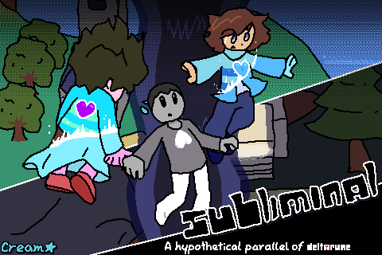

Subliminal

Welcome to the world of Subliminal!
I might be bad at introducing, but Subliminal can be considered a parallel of Deltarune.
The world overall remains exactly what it is in Deltarune, pre-Chapter 1.
But, no, we are NOT doing all the adventures Chapter 1 through 7 in the Hometown...
What should be taking place in the original Deltarune, as the Prophecy has told... Just didn't.
A specific tortoise at Hometown has organized an event, gathering people for the "Second Hometown".
Kris, Susie and Ralsei didn't become the heroes that save the day. Maybe Ralsei never existed.
All the Dark World stuffs didn't take place in the Hometown. ...Instead, they happened. Where. We. Are.
A terrain foreign to us, however becoming familiar as we unite there.
A place away from the Hometown, but one that feels more like home.
A closet engulfed in darkness, yet inside darkness lies a friendly town.
Deltarune isn't going to take place as it is anymore.
The white pen of hope has fallen into our hands.
And with this pen, we write down the story of our own journey.
The Journey, in a Subliminal World.
Subliminal is a collab work created by enthusiastic Minecraft SMP / Deltarune / roleplaying enjoyers and directed (Mooostly) by unsupportedfiletype, a.k.a. File.
Actually, I would like to tell you about this place more, as it's, so far, one of my favorite collaborated works. I have had a great time participating in it. And hell, we even had an ARG circled around it!
If you are also interested in taking part, then go for it and find out. Though, I strongly recommend that you should have some experience in Soulbound, and if you'd like a customized skin for your character, Figura and Blockbench. You won't regret delving into them!
The modpack also consists of a few nice mods, if you just want to have a good Minecraft turn-battle-esque survival multiplayer. Nothing is stopping you here!
(Really. TRY SOULBOUND NOW. 2.0 IS ABSOLUTE PEAK.)
Please, note this: The Minecraft SMP server for Subliminal is currently down!
File still needs to wait for the Soulbound developer to push a few updates for the Soulbound mod so he can work on it. Let's be patient, okay?
Note: You will not get the invitation link from me. Get to Soulbound > #servers > Subliminal and figure it out yourself.
Want to know more about this place? Then help yourself! Thoooough, I'm probably not the best person to provide info that isn't written down by myself. ...But eh, here it goes anyway.
Note: A large portion of the Character page will be written in Miru's POV, and she doesn't exactly know much about some of the people mentioned. If you want to know more about them, please go to the Discord server.
- World Overview (NO CONTENT)
- Signature Places (NO CONTENT)
- Characters (OUTDATED)
- Significant Events (NO CONTENT)
- Miru's log (Flashbang warning; OUTDATED)